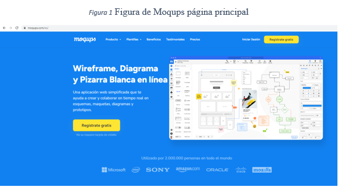
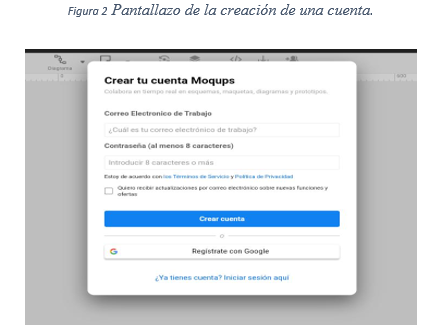
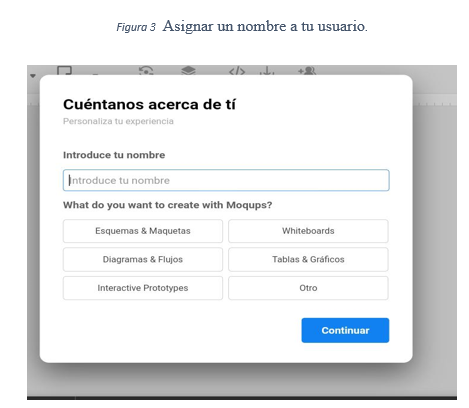
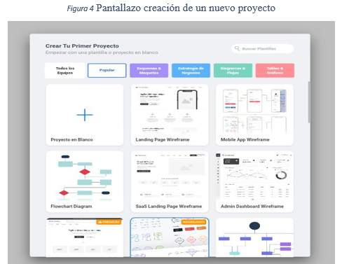
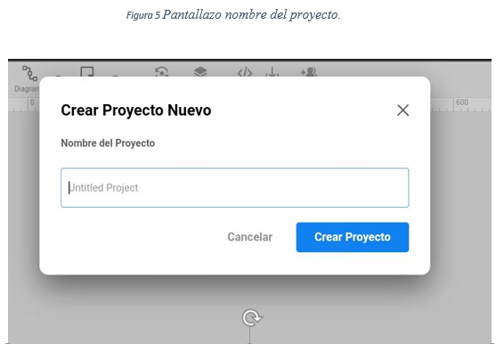
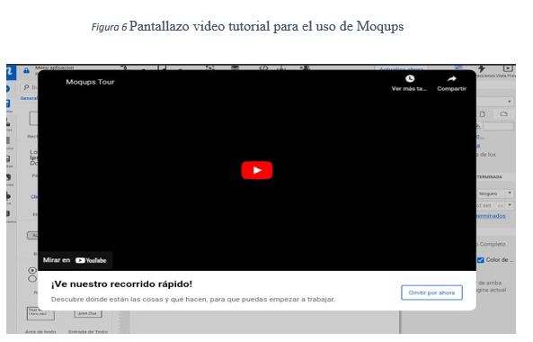
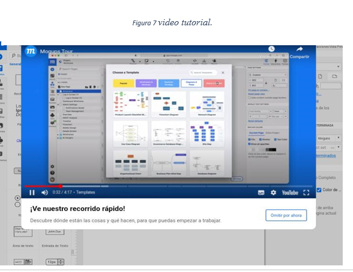
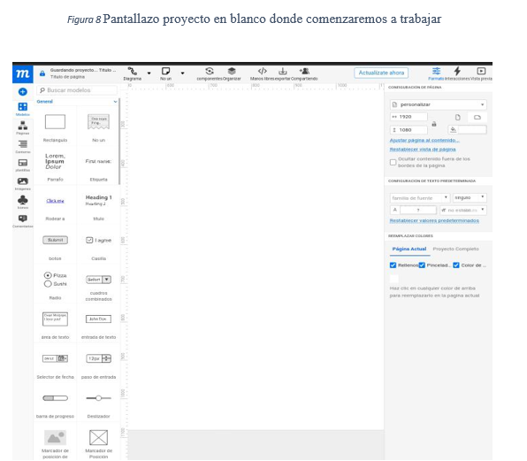
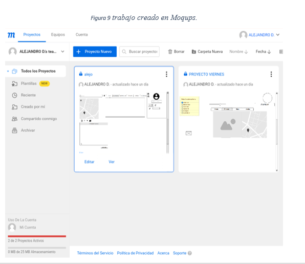

Pasos para usar Moqups. (web)
1.Cuando hayas puesto “Moqups” en el navegador determinado en tu pc, debes ingresar al primer link donde te llevara a este pantallazo.
Figura 1 Figura de Moqups página principal

2.Crear cuenta.

3. Asignar un nombre para tu cuenta.

4.Crear un nuevo proyecto.


5.Ver video tutorial que nos enseña a cómo usar “Moqups”.(De ser necesario).


6.Estas listo para crear tu proyecto y disfrutar de “Mocups” puedes ser tan creativo como tu quieras.

¿Por qué me gusto esta pagina?
Cabe recalcar que es buena herramienta ya que cuenta con varias funciones que nos son útil, cuando vayamos a hacer nuestro menú en un software y no me gusto porque es de paga y pienso que debería ser gratis.
Pero a pesar de eso es muy útil esta herramienta y me gusto su diseño y que cuenta con un video que nos ayuda a usarla para no tener inconvenientes a la hora de usarla.
¿Qué es Moqups?
Un Moqups, también llamado wireframe, es un esquema que realizamos de un diseño gráfico o un diseño web que representa la idea de una aplicación que nosotros tenemos o que un cliente quiere implementar. Esto significa que es un diseño base o un boceto que se realiza a partir de unas premisas.
En definitiva, un montaje que simula el resultado de un producto y que sirve para obtener la aprobación del cliente o consumidor final. Dicho de otra forma, es el canal a través del cual podemos presentar un proyecto y demostrar cómo quedará, tanto en lo estético como en lo funcional.
url página web (Moqups).
https://moqups.com/es/
Menú creado en Moqups. (Por mí.)

Herramienta elegida en grupo.
Herramienta.
figma
¡Por que se escogió esta herramienta?
Se eligio esta herramienta ya que cuenta con varias funciones las cueles sirven de anera correcta tambien descubrimos que es gratuita y se puede descargar en el computador facilitando asì el trabajo ya que podemos trabajar mucho mas facil en grupo.
¿Ventajas de esta herramienta?
Figma se trata de una herramienta de diseño enfocado en sitios web y aplicaciones. A diferencia de otras herramientas de prototipado, Figma se aloja en la web y permite la colaboración en vivo: tienes la posibilidad de compartir el proyecto con los miembros de tu equipo y editarlo en la misma mesa de trabajo.